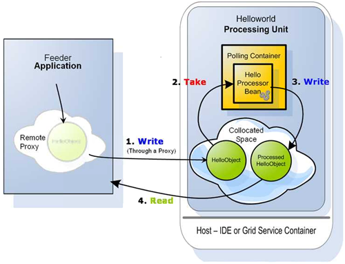

If you are new to the Hello World example, we suggest that you first review the Hello World screencast. This topic provides a short overview of the example, and gets you started with applying security aspects to it.
The example distribution can be found under
As shown in the diagram below, we have a processor bean that processes HelloObjects; it works with a polling container to talk to with a Space, all inside a Helloworld Processing Unit. External to that process is the Feeder application, which gets a remote proxy to the Space and uses it to write objects (#1). The HelloObject written to the Space becomes interesting to the polling container. The polling container takes it out of the Space (#2), hands it to the HelloWorld processor bean for processing, and then writes the results back to the Space (#3), in this case a ProcessedHelloObject. Later, our feeder application can read the results (#4) and print them to the screen.

Obviously we want to protect the Space data (containing both HelloObject and ProcessedHelloObject). To do this, we must first define the Space as secured. The processor bean's polling container then needs to be granted Take access for HelloObject, and Write access for ProcessedHelloObject. Additionally, the Feeder that gains a remote proxy to the Space must be granted Write access for HelloObject and Read access for ProcessedHelloObject.
Lets define a secured Space in hello-processor/META-INF/spring/pu.xml by adding the secured namespace property. This can also be accomplished by adding the secured Space URL property.
<!-- pu.xml -->
<os-core:embedded-space id="space" space-name="processorSpace">
<os-core:security secured="true"/>
</os-core:embedded-space>
Accessing the secured space requires a principal. In this case the principal is the processor beans' polling container.
Lets assume the principals' credentials are: username="helloProcessor" and password="helloWorld".
There are two options for providing the principal credentials. The first, is by adding the credentials in pu.xml. The drawback is that the credentials are exposed. The second, which is preferred, is during deployment of the processing unit.
<os-core:embedded-space id="space" space-name="processorSpace?secured">
<os-core:security username="helloProcessor" password="helloWorld"/>
</os-core:embedded-space>
The Feeder in this example is not a processing unit. It is just an external process acquiring a remote proxy to the Space.
Lets take a look at the Feeder constructor.
public Feeder(String url){
IJSpace space = new UrlSpaceConfigurer(url).space();
this.gigaSpace = new GigaSpaceConfigurer(space).gigaSpace();
}
The feeder needs to be granted access for operations it will perform on the remote secured Space. In this case the feeder is the principal. Lets assume the principals' credentials are: username="helloFeeder" and password="feedTheWorld".
public Feeder(String url){
IJSpace space = new UrlSpaceConfigurer(url).userDetails("helloFeeder", "feedTheWorld").space();
this.gigaSpace = new GigaSpaceConfigurer(space).gigaSpace();
}
With production environment the user/password used by the application (for database or space access) should be passed into the application at the deploy time. This will make sure the user/password will never be stored on file and be accessible.
<os-core:embedded-space id="space" space-name="processorSpace">
</os-core:embedded-space>
Using the CLI deploy command supply username and password using the -user and -password.
> gs deploy -secured -user testing -password 1234 myPU.jar
Another option, is to set the security username/password as variables at the pu.xml and inject them - for example, via a deploy property:
<os-core:embedded-space id="space" space-name="processorSpace">
<os-core:security username="${myusername}" password="${mypassword}"/>
</os-core:embedded-space>
Using the CLI deploy command embed the username and password matching the placeholders given in the pu.xml
> gs deploy -properties embed://myusername=testing;mypassword=1234 myPU.jar
Managing the users and their authorities can either be done using the UI or API.
We have two users to declare - "helloProcessor" and the other "helloFeeder".
The "helloProcessor" user will be granted Take access for HelloObject and Write access for ProcessedHelloObject.
The "helloFeeder" user will be granted Write access for HelloObject and Read access for ProcessedHelloObject.
Some implementation notes:
The ProcessedHelloObject is fictive. Actually the Feeder waits for HelloObject template matching the "Hello World !!" String.
The HelloObject was replaced by a Message Object in the products example. Thus the actual class that should be granted privileges for is org.openspaces.example.helloworld.common.Message.
Lets look at how easily it can be using the GigaSpaces Management Center (UI) Security:
There are a couple of deployment options. For example, deploying using the ant build script or the UI.
To simplify this example we will assume that the Service Grid components are not secured.
To run the example:
Start a GSM.
Start a GSC.
Run the build deploy-processor target.
Run the build run-feeder target.
To complete this example, here is a brief overview of what needs to be done to deploy onto a secured Service Grid.
In a secured Service Grid, the GSM and GSC are secured. This means that in order to deploy, you must have Provision PU privileges. Declare another principal with Provision PU that will be used for deploying.
Using the UI, log in with this principals' credentials, and open the deployment wizard to deploy the processor.
Now, all that is left is to run the feeder as an external application.